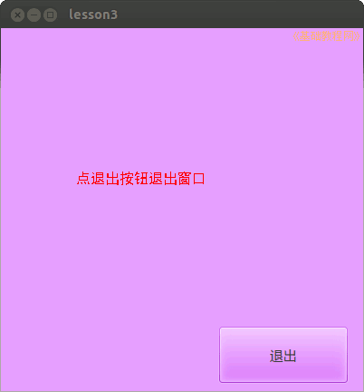

2014-2015 第一学期九年级程序设计教学设计
作者：TeliuTe 来源：基础教程网
三、学会使用按钮 返回目录 下一课
（一）教学设计
1、学习目标：
2、注意事项：绕过弯来，既不要跳也不要落，一楼过了二楼
3、教学过程：
1）教师准备学案和板书；
2）学生整队进入，开机抄黑板上笔记；
3）教师讲解板书演示操作；
4）学生打指法、日志、完成操作；
5）教师打勾记录学生指法成绩，检查日志和操作；
注：学生抄完笔记就开始打指法、日志，老师讲完后再继续完成；
（二）板书设计(学生笔记)
教学9-3 2014年09月23日 星期二 17:54
第3课 学会使用按钮
1、新建lesson3，新建工程，最大化
2、右下角工具箱，ok按钮，画一个
3、右边属性，text改成“退出”
4、右键MouseDown，输入代码： fmain.close
--
03学会使用按钮
1.软件由界面和代码组成
2.界面上放一个ok按钮，点击按钮后由代码控制
3.点击按钮退出，设计关闭窗口的代码：
fmain.close
操作图示：

（三）课后记
--
学生来的有点拖拖拉拉，敲铃还没来齐磨磨蹭蹭的
3班进来先训一顿，上节课只有两个学生做完
--
别的班都做出来了，就不是太难而是学习方法和习惯
指法日志不要花费太多脑细胞，精力放在知识上编程上，中文切换不出来让旁边同学帮
--
前面学的不要忘了，MouseDown是学过的，不要返工回去再学
打字只是活动一下手指，让心思进入到学习当中，打一遍就可以了
--
3班让做两个按钮，举例的时候举了两个按钮一个退出，一个关闭
结果快快的都做出来了，要求一下还是好的多，嘻嘻哈哈的时间都浪费了还没出东西
--
1班下午的课，学生有些兴奋的过头，2班上完直接就进来也没整队
下午帮着体育搞体侧导入基础信息，回来学生都自己在抄笔记打字
--
把上节课旷课的学生批评了好几遍，实际上说一遍就行了，啰啰嗦嗦的没完
做的挺快的，4班有两个一个跑了另一个眼睛怎么了的，也回去了
--
上到初三学生很多都有些逆反的，跟个火药桶一样一碰就着
说一下防止其他学生跟着学坏了，不说影响一片，真要影响也没办法
返回目录 下一课
本教程由86团学校TeliuTe制作|著作权所有
基础教程网：http://teliute.org/
美丽的校园……
转载和引用本站内容，请保留作者和本站链接。